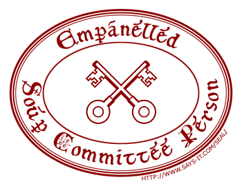

Tuesday, March the 30th, 2010
back to: title, date or indexes
I am extremely pleased to note the formation of a Google Group entitled The Soup Committee, devoted to all things Hooting Yard. Though I have been empanelled as a sort of honorary member, the Committee is the brainchild of a number of very very sensible readers and listeners, its mission to promote Hooting Yard throughout interwebshire and the wider world until inevitable global domination is achieved. It is also a gathering place for enthusiasts to wallow in an online Hooting Yard wallowing facility.
If you wish to be empanelled as a Soup Committee Person (and who would not?) please visit by clicking the link above, and make your application. Please note that to avoid an onslaught of annoying pill-peddling spam gits, it is imperative that you write something compelling when asked to provide your reason for wishing to be empanelled.

Further Soup Committee information is available in both text and audio.